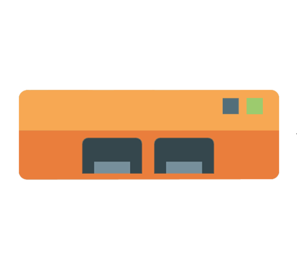
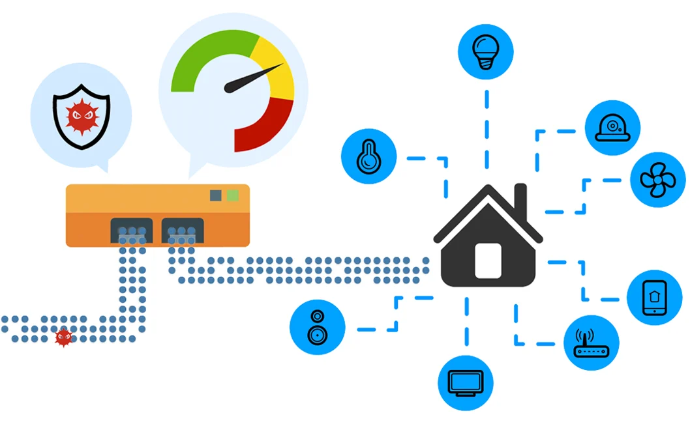
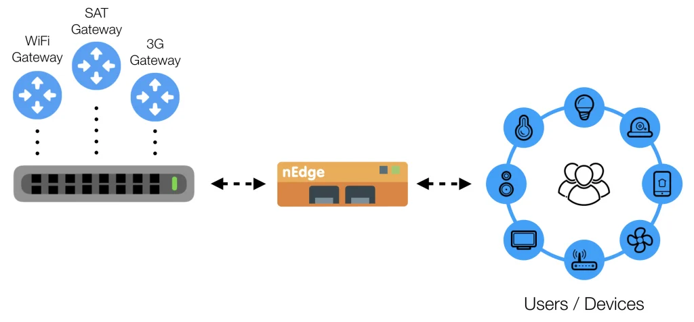

nEdge

Оптимизация пропускной способности уровня 7
политики для каждого пользователя
и аварийное переключение
портал
Рекомендация
Кому следует выбрать nEdge
nEdge (ntopng Edge) — это шлюз на границе локальной сети: он идентифицирует приложения с помощью nDPI и применяет политики уровня 7 для каждого пользователя, управление полосой пропускания, маршрутизацию нескольких глобальных сетей и адаптивный портал. Выбирайте его, когда необходимо справедливо распределять и контролировать одно узкое место Интернета.
- Вам необходимо заблокировать или ограничить приложения, такие как торренты или загрузка в облако, для каждого пользователя или для каждого устройства.
- У вас есть несколько каналов глобальной сети, и вам требуется аварийное переключение и маршрутизация для каждого пользователя.
- Вам нужен авторизованный портал и устройство обнаружения, например, на предприятии малого и среднего бизнеса, в отеле или в общественном месте.

Идеальный вариант использования
Идеальный вариант использования nEdge
- Среда: Периферия LAN-WAN: малый и средний бизнес, отели, бары и рестораны, частные интернет-провайдеры с несколькими шлюзами. Режим моста или маршрутизатора.
- Команда: администраторы, использующие веб-интерфейс и REST API.
- Технические требования: Ubuntu Linux 20/24 LTS. Ознакомьтесь с примечаниями по размерам оборудования.
- Проблема решена: насыщенная полоса пропускания, нежелательные приложения, идентификация устройств и микросегментация.
Идеально подходит для любой среды
Сценарии развертывания
МСП
Малые и средние предприятия (МСП) часто испытывают трудности с контролем использования полосы пропускания на уровне 7. Внутренние правила компании могут налагать ограничения на посещаемые веб-сайты, а также на протоколы приложений уровня 7, используемые в сети. Например, облачное хранилище может быть запрещено, чтобы сотрудники не могли перемещать слишком много данных из облака или в него. Аналогичным образом, доступ к развлекательным сайтам, таким как Facebook и YouTube, может быть ограничен или запрещен в обычные рабочие часы.
nEdge может применять такие правила, не требуя внесения изменений в топологию сети, что может быть дорогостоящим и создавать конфликты с уже существующим оборудованием и конфигурациями. nEdge также может генерировать оповещения при подключении нового устройства к сети.

Провайдеры доступа в Интернет
Отели, бары и рестораны, торговые центры и другие места в общественных местах почти всегда предоставляют бесплатный или платный доступ в Интернет. Отели предлагают своим гостям доступ в Интернет. Аналогичным образом бары и рестораны предоставляют своим клиентам доступ в Интернет. Однако обычно эти провайдеры имеют один Интернет-шлюз, который обычно совпадает с тем, который используется персоналом отеля. В таких обстоятельствах плохо работающий клиент или просто большое количество подключенных устройств могут легко поставить под угрозу доступ в Интернет и подорвать нормальную бизнес-операцию. Сегодня критически важные операции, такие как платежи в точках продаж (POS), бронирование и бухгалтерский учет, должны выполняться онлайн, а нарушение доступа в Интернет почти сразу же приводит к потере денег.
nEdge помогает защитить критически важные для бизнеса операции, автоматически идентифицируя обычных гостей и сотрудников, а также людей и устройства, а также распределяя приоритеты их трафика в соответствии с различными политиками. Так, например, on может гарантировать персоналу минимальную пропускную способность и разрешить гостям работать с полной пропускной способностью только тогда, когда персонал бездействует. Более того, гостевая пропускная способность может быть равномерно разделена между всеми активными гостями, так что ни один пользователь не сможет поставить под угрозу доступ в Интернет. Для дальнейшего контроля некоторые протоколы, потребляющие полосу пропускания, такие как BitTorrent, также можно отключить или ограничить до очень небольшой части общей доступной пропускной способности.

Многосетевые/многосетевые провайдеры
nEdge включает в себя расширенные функциональные возможности, специально разработанные для частных провайдеров доступа в Интернет, характеризующиеся наличием нескольких интернет-шлюзов с различной скоростью и стоимостью (например, WiFi, 3G, SAT). В этих средах часто существуют разные планы пользователей, например:
- Базовый пользователь: может использовать только Wi-Fi с ограничением скорости.
- Обычный пользователь: может использовать Wi-Fi по умолчанию, но также может использовать 3G, если Wi-Fi недоступен.
- Золотой пользователь: может использовать любой из доступных шлюзов с зарезервированной полосой пропускания.
Пользователям всегда следует использовать менее дорогой доступный шлюз в зависимости от их плана. Если такой шлюз становится недоступным, пользователи должны использовать альтернативный шлюз в соответствии с приоритетом шлюзов и планами пользователей и переключиться обратно на менее дорогой шлюз, когда он доступен.
nEdge может управлять сценариями управления, подобными описанным выше. Это всего лишь вопрос настройки нескольких шлюзов с политиками приоритета и маршрутизации на основе планов пользователей. nEdge также обеспечивает аварийное переключение и балансировку нагрузки, отслеживая состояние шлюзов и переключаясь на шлюзы с более высоким приоритетом (менее дорогие или более производительные), когда они доступны.

Альтернативы
Альтернативы nEdge в сравнении
Одни и те же критерии для каждого варианта: роль, когда ее выбирать, ограничения и стоимость.
nEdge Lite
- Роль: Межсетевой экран и зонд уровня 7 на основе безголового сетевого фильтра.
- Выбирайте его, когда: Вам нужно много облегченных точек принудительного применения, сообщающих об одном ntopng.
- Ограничения: Нет встроенного GUI, формирующего или перехватывающего портала.
- Расходы: Вскоре
ntopng
- Роль: Только мониторинг.
- Выбирайте его, когда: Вам нужна видимость, а не принуждение.
- Ограничения: Он контролирует, а не обеспечивает соблюдение политики.
- Расходы: Сообщество бесплатно
Компромиссы
Когда nEdge — неправильный выбор
- Он предназначен для одной периферийной локальной сети, где клиенты выходят в Интернет через глобальную сеть.
- Он нацелен на одну узкую точку, например на границе офиса или отеля. Для многих внутренних сегментов см. nEdge Lite.
- Он работает только на Ubuntu Linux 20/24 LTS.
- Pro стоит 499,95 евро, Enterprise L — 999,95 евро.
Доказательство
Технические характеристики, версии, цены и документация
Ниже приведены функции, поддерживаемые платформы и протоколы, версии с ценами, ссылки на документацию и ответы на распространенные вопросы.
Сделайте сеть снова быстрой
nEdge гарантирует, что Интернет всегда доступен для критически важных бизнес-приложений, не позволяя хостам подвергать риску пропускную способность. nEdge также оптимизировал пропускную способность сети, ограничивая нежелательный трафик, например торренты или загрузку в облако.

Гарантированное наличие Интернета
nEdge помогает сетевым администраторам обеспечить бесперебойную и контролируемую работу сложных сетей путем точного управления множеством различных подключенных устройств, которые конкурируют за доступ к Интернету. Доступ в Интернет почти всегда ограничен пропускной способностью загрузки и выгрузки, предоставляемой интернет-провайдером (ISP), и такая полоса пропускания легко перенасыщается, особенно когда к Интернету подключается множество устройств. «Плохой Интернет» часто встречается в многолюдных общественных местах, включая отели, круизные лайнеры, бары и рестораны, где даже одно устройство может поставить под угрозу работу сети и негативно повлиять на качество работы (QoE) всех остальных устройств.


nEdge предоставляет интуитивно понятный графический веб-интерфейс для управления использованием доступной полосы пропускания Интернета между устройствами. Максимальную пропускную способность загрузки и выгрузки можно легко контролировать для любого устройства всего несколькими щелчками мыши. Аналогично, для каждого устройства можно установить политику минимальной гарантированной скорости загрузки и скачивания.
Примеры поддерживаемых элементов управления пропускной способностью включают в себя:
- «Равномерно распределяйте доступную скорость загрузки и выгрузки между всеми подключенными устройствами»
- «Зарезервируйте не менее 50 % пропускной способности загрузки для важных устройств»
- «Распределите 70% доступной пропускной способности поровну между клиентами, а остальные 30% поровну между персоналом»
nEdge обеспечивает еще более точное управление полосой пропускания, которое учитывает также пользователей-людей (а не только устройства) и протоколы приложений уровня 7. Политики уровня 7 можно быстро настроить, например, для предотвращения использования Tor или для регулирования BitTorrent, и это лишь некоторые из них.
Регулирование трафика приложений уровня 7

Часто бывает сложно контролировать использование полосы пропускания сети и формировать трафик нежелательных приложений. Кроме того, внутренние правила компании могут налагать ограничения на разрешенный трафик приложений уровня 7. Вам надоели люди, использующие облачные сервисы, или те, кто загружает контент, защищенный авторскими правами. Ваши сотрудники проводят слишком много времени, посещая развлекательные сайты в обычные рабочие часы? nEdge может применять политики для блокировки или регулирования трафика приложений уровня 7 без необходимости внесения изменений в топологию сети, которые могут быть дорогостоящими и создавать конфликты с уже существующим оборудованием и конфигурациями.
nEdge выполняет глубокую проверку пакетов, используя собственную библиотеку nDPI, чтобы сначала обнаружить, а затем заблокировать или ограничить протоколы приложений уровня 7. Политики уровня 7 можно быстро настроить, например, для предотвращения использования нежелательных приложений определенными устройствами.
Примеры политик уровня 7, которые можно установить:
- «Блокировать BitTorrent и Tor-трафик, генерируемый с рабочих станций компании»
- «Ограничить потоковую передачу мультимедиа не более чем до 10 % от доступной пропускной способности загрузки»
- «Разрешить принтерам выполнять только IPP и блокировать любой другой вид трафика, который они могут попытаться сгенерировать»
Политики такого типа очень эффективны, когда речь идет об оптимизации пропускной способности и заставляют устройства запускать только необходимые приложения уровня 7.
Однако возможность устанавливать политики на определенных устройствах — это лишь часть истории. Поскольку люди часто предпочитают меньше думать об устройствах и больше о других людях, когда дело доходит до контроля доступа к Интернету, nEdge позволяет применять политики к «пользователям» Интернета. Неважно, использует ли Джон свой iPad, iPhone или Xbox. Джон — это просто человек, который имеет доступ к Интернету, и nEdge позволяет применять для Джона политики, которые прозрачно применяются ко всем его устройствам, как если бы они были одним.
Политики в отношении «пользователей» Интернета, которые можно обеспечить с помощью nEdge, включают:
- «Не позволяйте детям Марии и Нейту играть в онлайн-игры сейчас, когда пришло время ужина»
- «Разрешить Джону выполнять обновления Apple только ночью»
nEdge позволяет настраивать серверы DNS. Каждый увиденный запрос DNS направляется на настроенные серверы DNS. Несколько серверов DNS готовы к выбору и могут быть бесплатно использованы в nEdge. И если вы беспокоитесь о том, что кто-то может попытаться вручную принудительно ввести произвольный DNS, не волнуйтесь! nEdge видит и направляет каждый запрос DNS в сейф DNS. Также доступны варианты с защитой от детей DNS.
Микросегментация услуг

С помощью микросегментации сервисов администраторы создают политики, которые явно разрешают обмен только определенным трафиком. Политики разрабатываются индивидуально для каждого узла в зависимости от роли и функции каждого узла. Например, он может заставить датчики Интернета вещей общаться только по MQTT, а веб-серверы — только по HTTP/HTTPS с клиентами и MySQL с внутренними серверами баз данных.
nEdge позволяет выполнять очень точную микросегментацию, чтобы безопасно изолировать критически важные хосты и службы от нежелательного или неожиданного трафика. Традиционные межсетевые экраны, системы предотвращения вторжений (IPS) и другие системы безопасности предназначены для проверки и защиты трафика, поступающего из Интернета, но они не могут ограничить полосу пропускания, используемую внутри сети. Микросегментация nEdge обеспечивает больший контроль над такими видами деятельности, позволяя обмениваться только определенными видами трафика с любым контролируемым хостом.
Типичные политики, позволяющие добиться микросегментации с помощью nEdge:
- «Разрешить веб-серверу обмениваться трафиком только HTTP/HTTPS с клиентами и MySQL с внутренними серверами баз данных»
- «Разрешить коммутаторам общаться SNMP и sFlow только с данным коллектором»
- «Разрешить POS-терминалу взаимодействовать с веб-сайтом банка только через HTTPS»
Обнаружение активных и бесшумных устройств
nEdge обнаруживает и точно классифицирует все устройства, подключенные к сети, в том числе бесшумные. Обнаружение и идентификация позволяют получить богатый набор информации, включающий тип устройства, семейство и (если возможно) модель и операционную систему для широкого диапазона проводных устройств. nEdge также обнаруживает новые устройства, подключенные к сети, а также может отправлять оповещения о неизвестных устройствах. Узнайте больше в этот пост.

Как это работает?
nEdge рассчитывает защитить локальную сеть (LAN), так называемую границу. Обычно клиенты и цифровые активы, требующие защиты, находятся в локальной сети и должны проходить через глобальную сеть для доступа в Интернет.
Мост
nEdge создает прозрачный мост между двумя сетевыми интерфейсами, один из которых подключен к локальной сети, а другой — к глобальной сети. nEdge работает через мост, где применяются настроенные сетевые политики.
Это подходящий режим для вас, если вам нужен быстрый и прозрачный способ защиты соединений LAN-WAN без перенастройки каких-либо устройств или IP-адреса.

Маршрутизатор
nEdge маршрутизирует трафик и решает, какой трафик следует маршрутизировать, а какой трафик следует отбросить. Поддерживается несколько интерфейсов WAN, что позволяет также принимать решения о том, какой интерфейс WAN следует использовать для маршрутизации.
Это подходящий режим для вас, если вы хотите создать маршрутизатор (с одной локальной сетью или с несколькими глобальными сетями), который маршрутизирует трафик отдельно для каждого устройства, а также для приложений уровня 7.

с первого взгляда
Ключевые особенности
- Блокировка/регулирование трафика приложений уровня 7: применение политик на основе трафика приложений уровня 7 и определение квот времени и трафика для каждого пользователя и приложения уровня 7.
- Гарантированная доступность Интернета: обеспечить максимальную пропускную способность загрузки/отдачи, гарантировать минимальную пропускную способность загрузки/отдачи.
- Captive-портал: аутентифицируйте пользователей с помощью страницы входа, прежде чем разрешить им доступ в Интернет. Аутентификация облегчает связь между пользователем и его/ее устройствами и последующее применение настроенных политик.
- Режим моста: создайте мост между двумя сетевыми интерфейсами, один из которых подключен к локальной сети, а другой — к глобальной сети.
- Режим маршрутизатора: маршрутизация трафика, поступающего от интерфейса, подключенного к локальной сети, к одному или нескольким интерфейсам глобальной сети, определение политик маршрутизации, которые будут применяться для каждого пользователя (например, премиум-пользователи через SAT и базовые пользователи через Wi-Fi).
- Балансировка нагрузки и аварийное переключение: в режиме маршрутизатора, когда настроено несколько глобальных сетей, можно реализовать мощные политики маршрутизации для каждого пользователя.
- Аварийное переключение: постоянно отслеживайте доступность Интернета и автоматически исключайте шлюзы, которые больше не могут получить доступ к Интернету.
Технические характеристики
Технические характеристики
- Ubuntu Linux 20/24 LTS
- Веб GUI доступен в любом браузере с поддержкой HTML5.
- RESTful на основе HTTP API
- поддержка TLS/HTTPS
- Возможность написания сценариев на Lua
- Ethernet/VLAN
- IPv4/IPv6
- TCP/UDP/ICMP
- Более 450 протоколов приложений уровня 7, поддерживаемых nDPI
модели
Выберите свою модель
Вы уже установили программное обеспечение?
Выберите модель. Разные модели открывают разные функции и возможности. Проверьте сравнительная таблица.
Скриншоты
Галерея
Связанный
Продолжайте исследовать
Цены и выпуски
Сравните издания и способы покупки.
Решения
По варианту использования и отрасли.
Руководство пользователя
Установка и настройка.
Краткое руководство
Установите и настройте его шаг за шагом.
Начать
Готовы увидеть это в своей сети?
Загрузите бесплатную версию ntopng для сообщества, сравните версии и купите в магазине или обсудите свои требования с командой ntop.